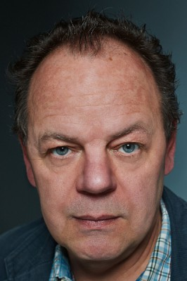

#3003 300 Worte Deutsch

 IMDB-Wertung: 5.7 / 10
IMDB-Wertung: 5.7 / 10  Metascore: 0
Metascore: 0 
Köln ist für Migranten ein heißes Pflaster geworden, seit der unerbittliche Dr. Ludwig Sarheimer vom Ausländeramt die „illegalen Schmarotzer und Ziegenhirten“ mit Abschiebung bedroht. Erbittert wehrt sich Moschee-Vorsteher Demirkan gegen die Behördenwillkür, denn er vermittelt jungen Männern Bräute aus der türkischen Heimat – auch wenn die Bescheinigung über deren Deutschkenntnisse gefälscht ist. Doch selbst Demirkans eigene Tochter Lale rebelliert gegen die traditionelle Heiratsvermittlung des Vaters – sie hat sich an das selbstbestimmte Leben einer Kölner Studentin gewöhnt. Richtig kompliziert wird es, als sie sich ausgerechnet in Sarheimers Neffen und Mitarbeiter Marc verliebt…
Jahr: 2013
Dauer: 96 Minuten
FSK: 12
Land: Deutschland Studio: DCM Film DistributionTonspuren:
Untertitel: Deutsch,
Auflösung: 1080p (1920x808) Größe: 7280 MB
Genre: Komödie
Regisseur: Züli Aladag
Drehbuch: Ali Samadi Ahadi, Arne Nolting, Gabriela Sperl, Züli Aladag
Soundtrack: Christopher Bremus, Michael Kadelbach
Darsteller:
 Nadja Uhl als Conny
Nadja Uhl als Conny- Sermiyan Midyat als Murat
 Almila Bagriacik als Arzu
Almila Bagriacik als Arzu- Navid Navid als Cem
- Mohammad-Ali Behboudi als Cems Father
-  Pierre Shrady als Schlesier
 Erdal Yildiz als Murat
Erdal Yildiz als Murat Christoph Maria Herbst als Dr. Ludwig Sarheimer
Christoph Maria Herbst als Dr. Ludwig Sarheimer Christoph Letkowski als Marc
Christoph Letkowski als Marc Pegah Ferydoni als Lale Demirkan
Pegah Ferydoni als Lale Demirkan Nursel Köse als Aunt Damla
Nursel Köse als Aunt Damla- Arzu Bazman als Daisy
 Kida Khodr Ramadan als Yücel
Kida Khodr Ramadan als Yücel- Vedat Erincin als Hodscha Cengiz Demirkan
- Aykut Kayacik als Emre
- Roald Smeets als Times
- Özay Fecht als Yücels Mother
- Beste Bereket als Fatma
- Lilay Huser als Cems Mother
- Sükran Pelin Öztekin als Nuran
- Semih Yavsaner als Kenan
- Baran Özdemir als Bridegroom 3 , rumored
- Yasin Islek als Nevin's Bridegroom
- Funda Bostanlik als Nevin
- Günther Beckstein als Himself , archive footage, uncredited
- Angela Merkel als Herself , archive footage, uncredited
- Christian Wulff als Himself , archive footage, uncredited
Datei: X:\2013(A-F)\300 Worte Deutsch (2013, FSK12, 1920x808).mkv seit 16.01.2016
Festplatte: HD 2012(N-Z)-2013(A-H)
 Es gibt insgesamt 127 Filme in der Gruppe '2013(A-F)'
Es gibt insgesamt 127 Filme in der Gruppe '2013(A-F)'